Text & Konzeption
Contorion
Contorion – Deutschlands führender Onlineshop fürs Profi-Handwerk. Mit einer multinationalen Kampagne warb Contorion für sein großes Sortiment an Werkzeug, Werkstattausstattung und Verbrauchsmaterial. Im Zentrum standen Headlines, die Contorions großes Werkzeugsortiment mit originellen Vergleichen zum Ausdruck bringen. Das Ganze wortwitzig, basierend auf Insights aus Handwerk, Industrie und Popkultur.
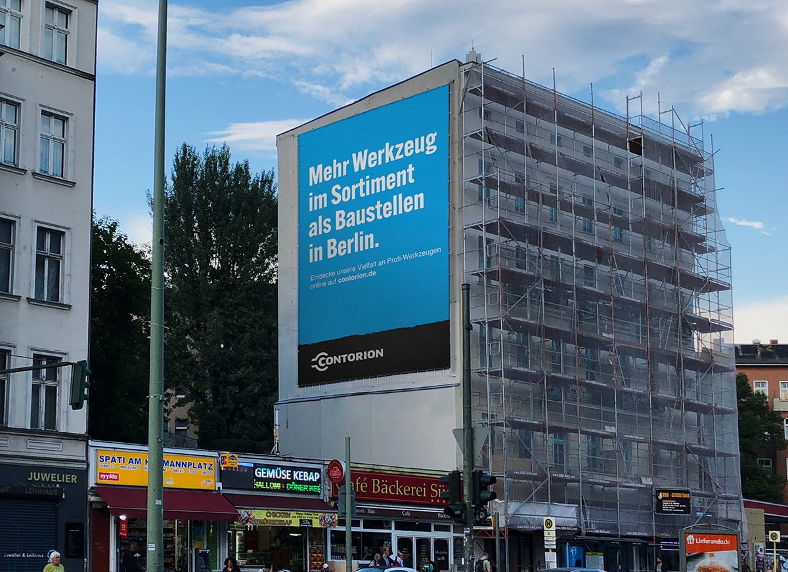
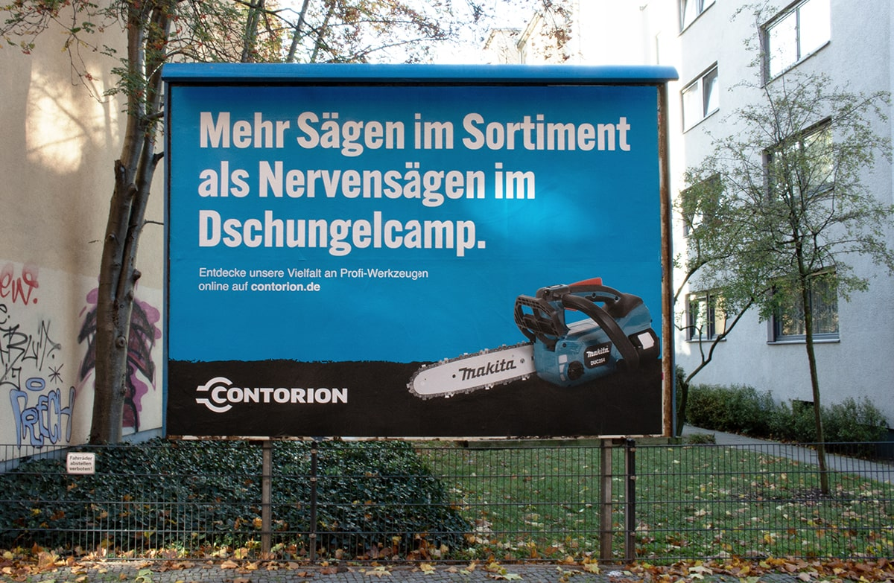
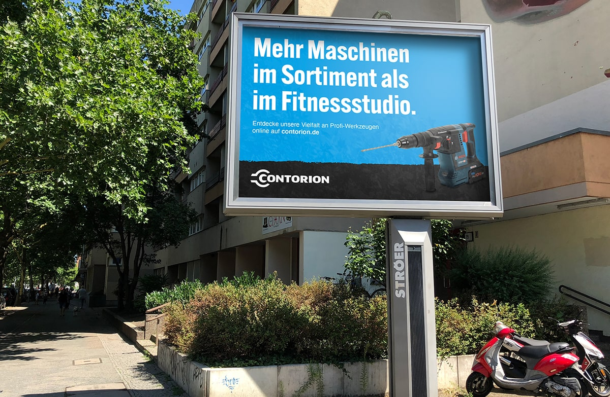
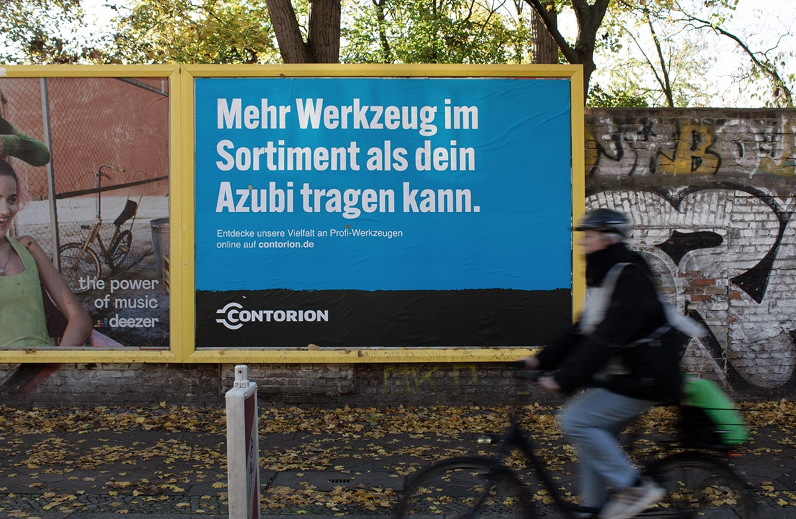
Es galt, die Awareness des digitalen Fachhändlers innerhalb der Zielgruppe der Profi-Handwerker zu steigern. Dies lösten wir mit humorvoll-provokanten Headlines – Out-of-Home, Online und auf Social Media.
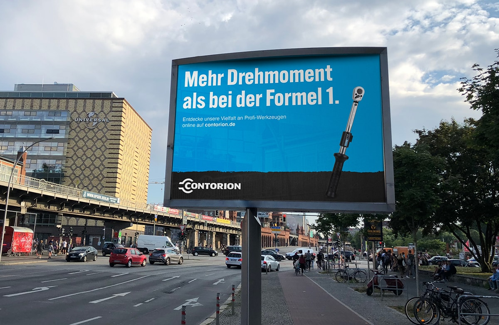

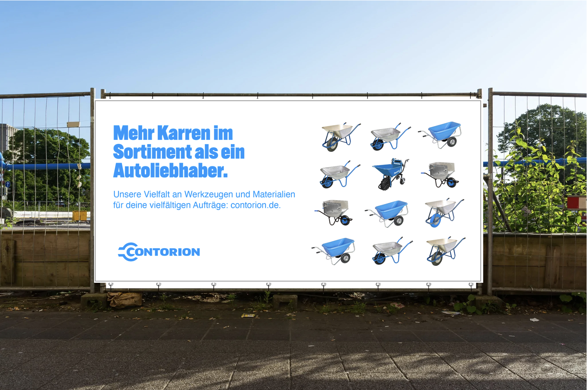
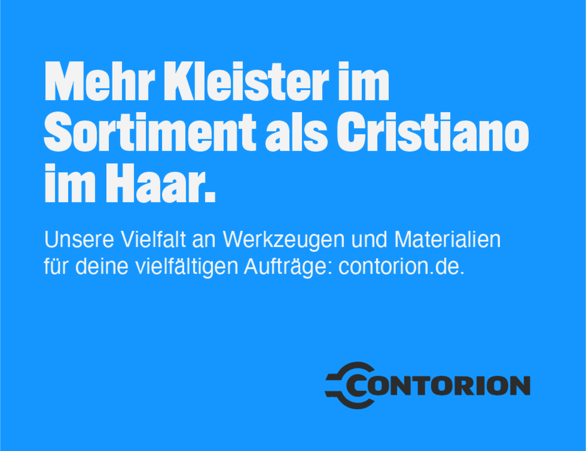
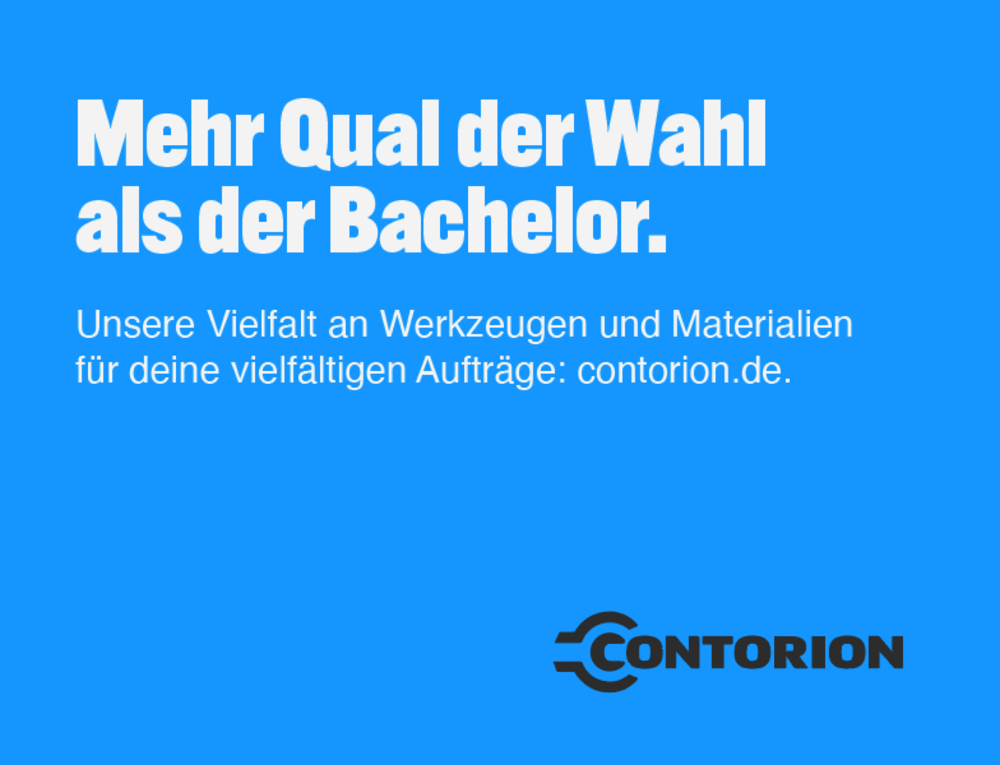
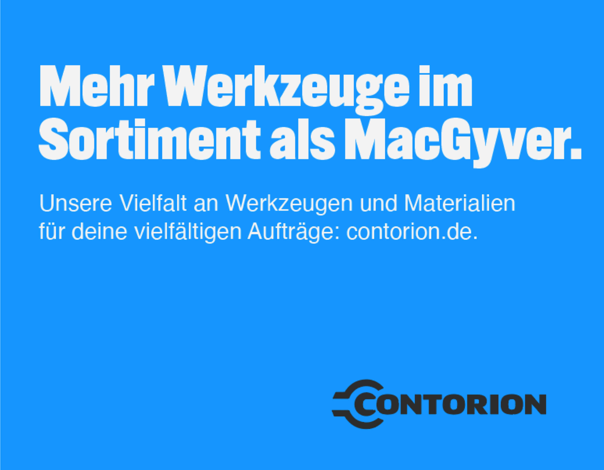
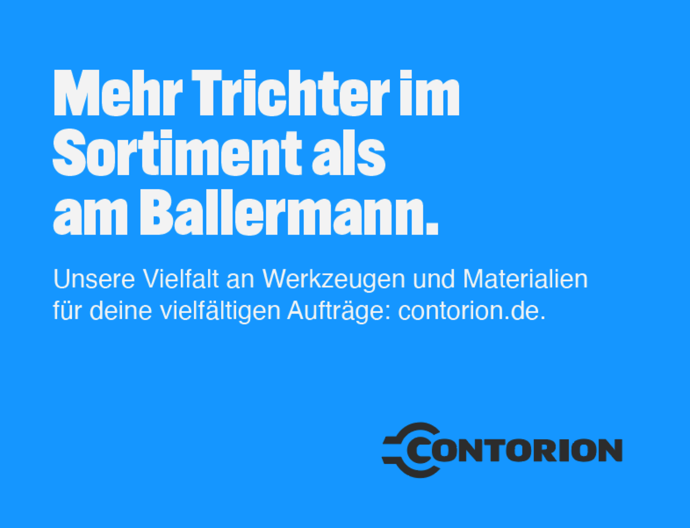
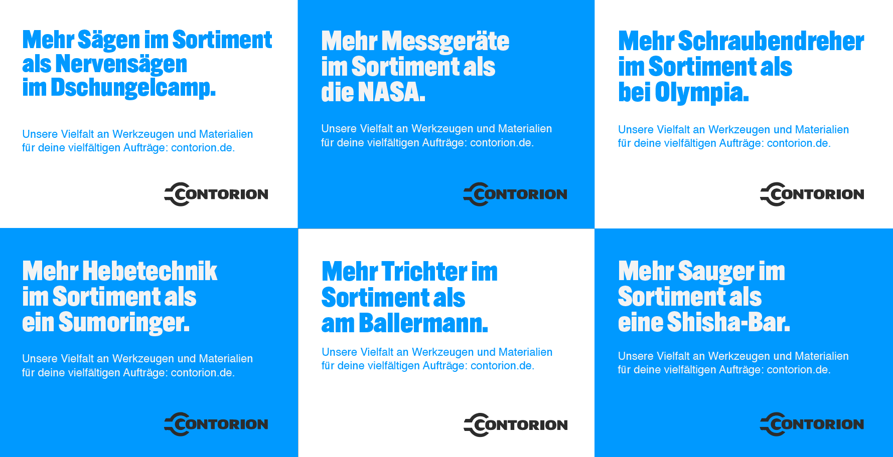
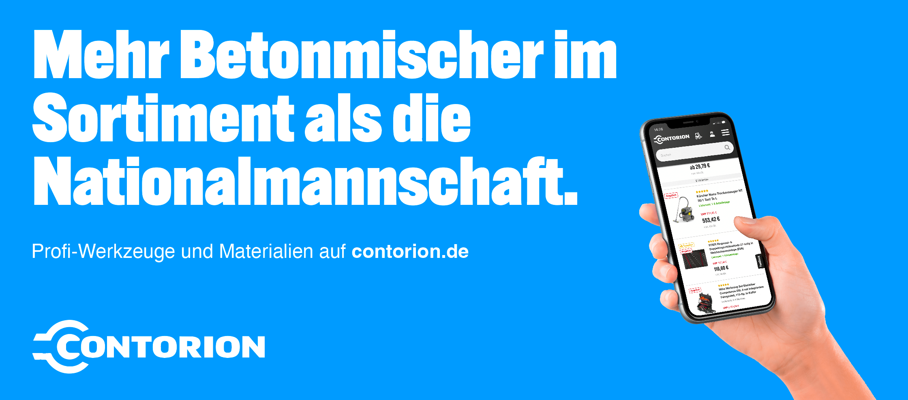
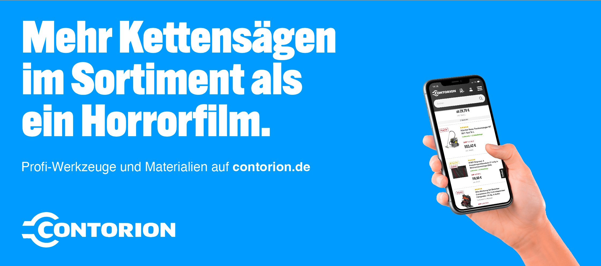
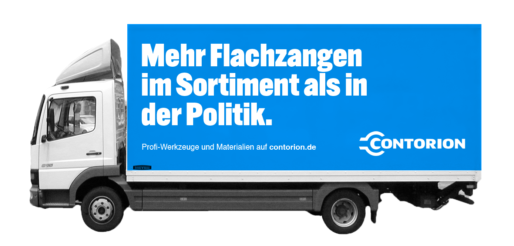

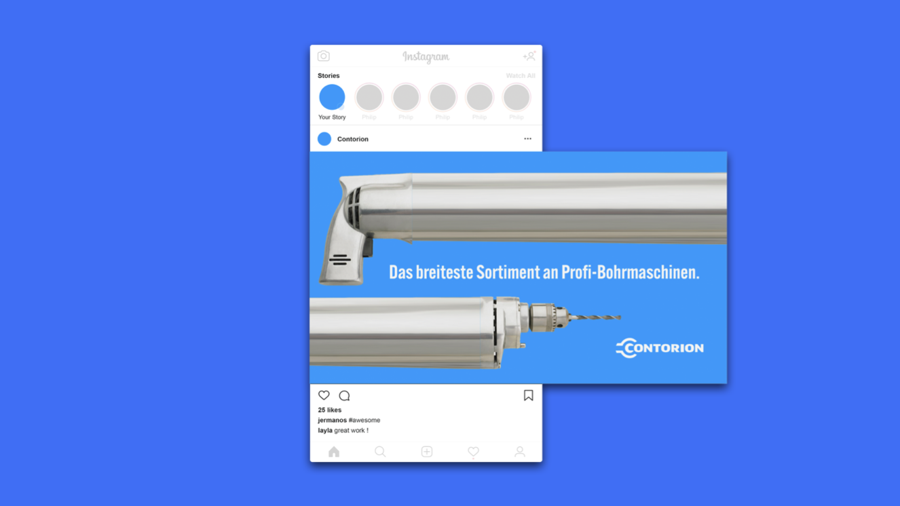
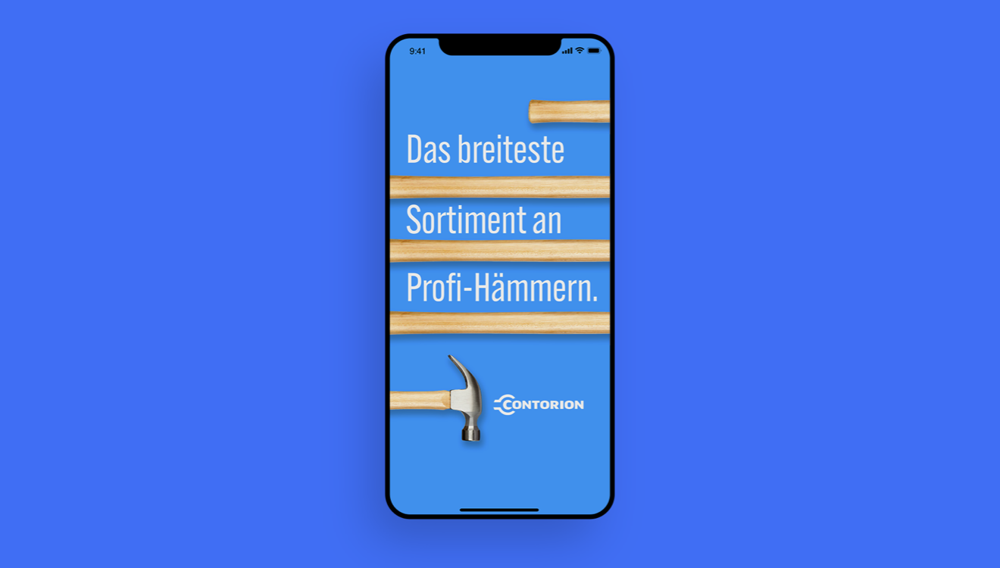